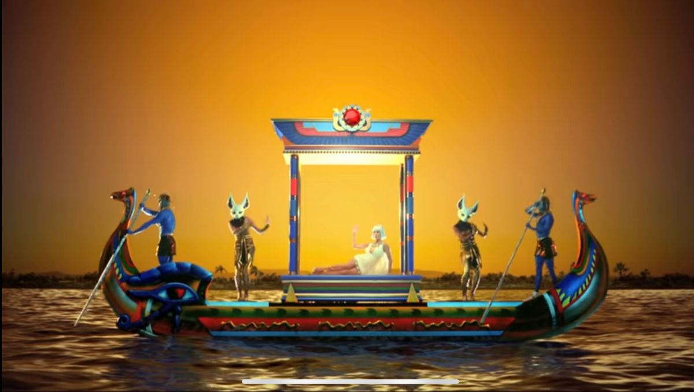
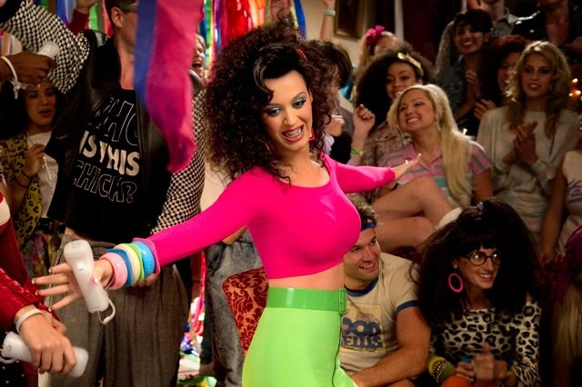
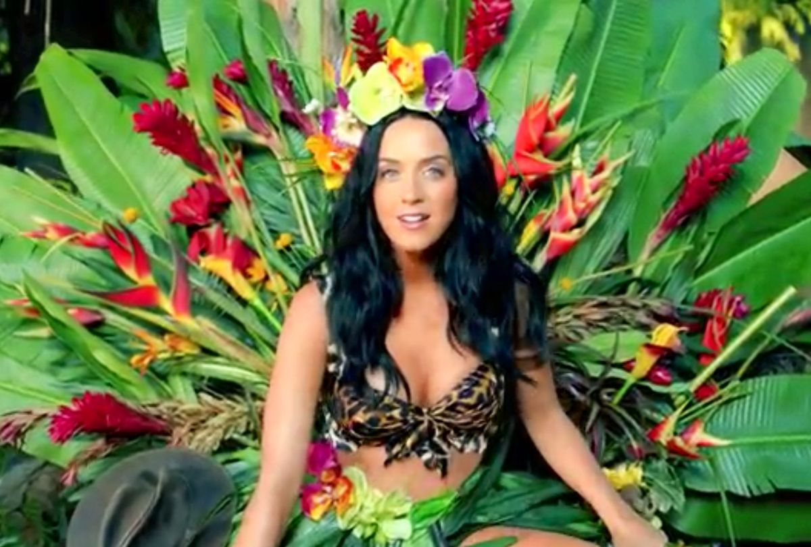
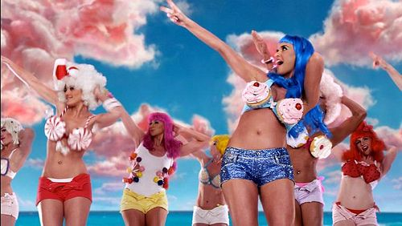
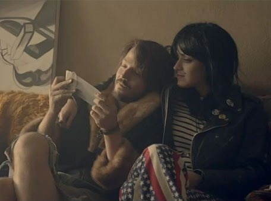
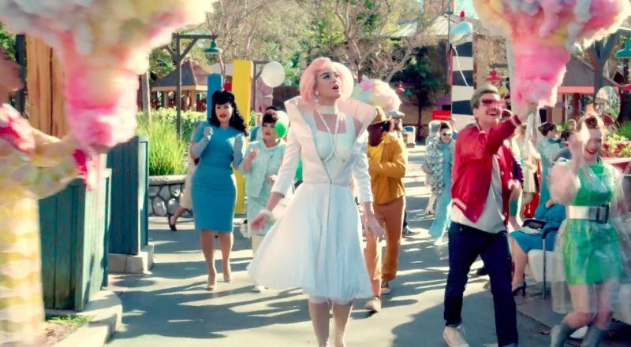
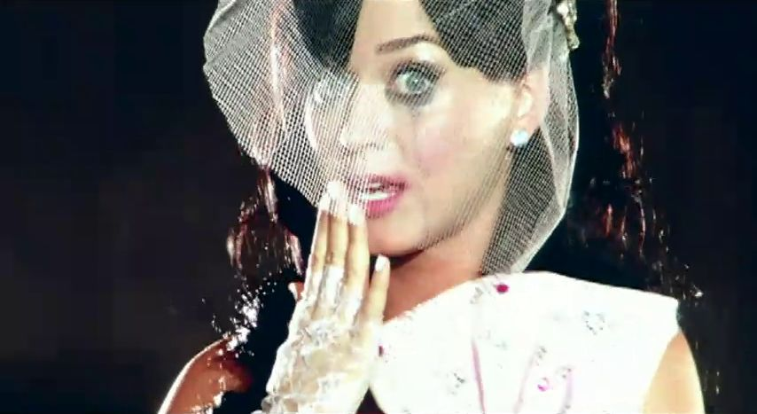
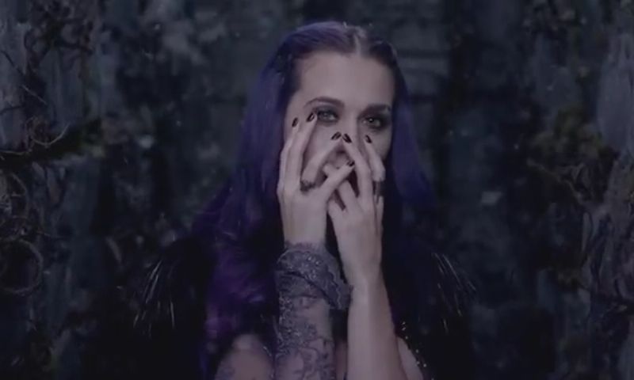
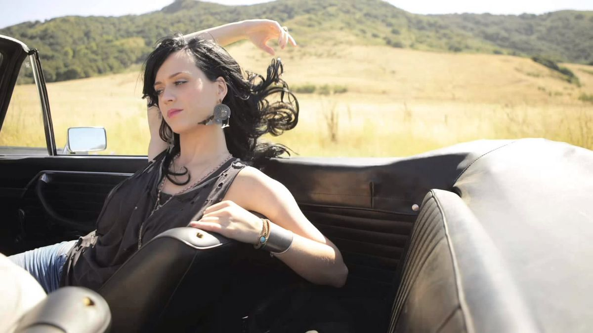

Sobre a Katy Perry!
Katy Perry é uma das artistas mais marcantes do pop moderno, conhecida por seu estilo vibrante, músicas cativantes e grande impacto cultural. Ela ganhou destaque mundial com sucessos que dominaram as paradas, trazendo uma sonoridade alegre e acessível que conquistou públicos de todas as idades. Suas músicas frequentemente abordam temas como amor, autoestima e superação, criando forte identificação com os fãs. Além disso, Katy Perry se destacou por seus visuais coloridos e criativos, que ajudaram a definir tendências dentro da estética pop. Sua capacidade de produzir hits comerciais e, ao mesmo tempo, transmitir mensagens positivas contribuiu para sua relevância na indústria musical. Ao longo dos anos, ela influenciou novos artistas e ajudou a moldar o pop como um gênero mais divertido e expressivo. Seu impacto permanece significativo, consolidando seu lugar como um ícone global da música pop.
Dark Horse

Last Friday Night

Roar

California Gurls

The One That Got Away

Chained to the Rhythm

Hot N Cold

Wide Awake

Teenage Dream
